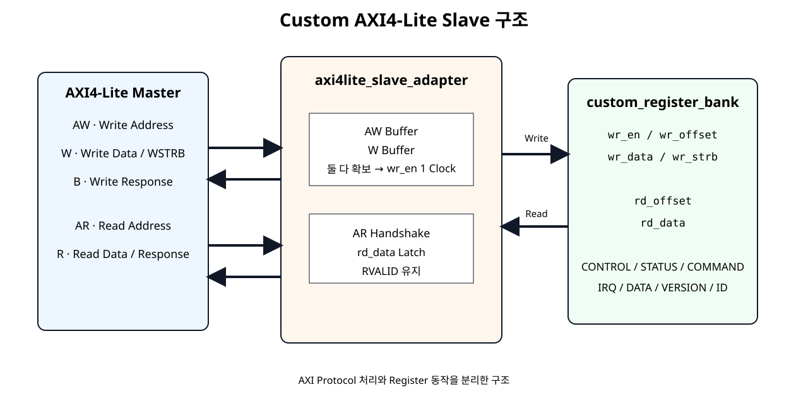
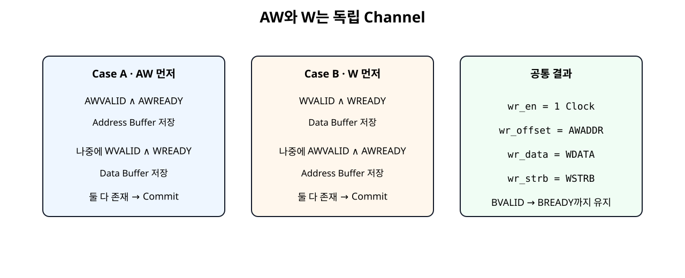
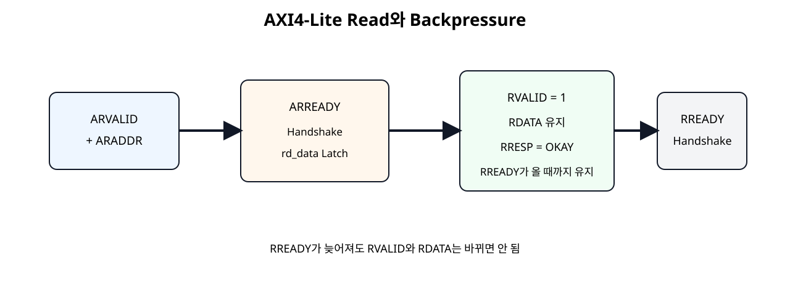

AXI Adapter
AXI Protocol 신호를 내부 Register Access 신호로 변환한다.
Basys3 SoC + NPU · SoC 12
SoC 11에서 만든 Bus-independent Register Bank 앞에 AXI4-Lite Slave Adapter를 연결한다. AW와 W를 독립적으로 수신하고, 두 정보가 모두 확보되면 Register Write Pulse를 만들며, BVALID/RVALID는 Master의 READY가 들어올 때까지 유지하도록 구현한다.
AXI Protocol 신호를 내부 Register Access 신호로 변환한다.
SoC 11 코드를 수정하지 않고 그대로 재사용한다.
두 모듈의 Wire 연결만 담당한다.
이번 장은 Register 기능을 새로 만드는 장이 아니다. SoC 11의 custom_register_bank가 이미 CONTROL, STATUS, COMMAND, IRQ_STATUS, DATA Register를 처리한다. 여기에 AXI4-Lite Protocol을 해석하는 Adapter만 추가한다.

Register Bank 인터페이스는 그대로 wr_en / wr_offset / wr_data / wr_strb / rd_offset / rd_data를 사용한다.
| Channel | 주요 신호 | Slave 역할 |
|---|---|---|
| AW | AWADDR, AWVALID, AWREADY | Write Address 수신 |
| W | WDATA, WSTRB, WVALID, WREADY | Write Data 수신 |
| B | BRESP, BVALID, BREADY | Write 결과 응답 |
| AR | ARADDR, ARVALID, ARREADY | Read Address 수신 |
| R | RDATA, RRESP, RVALID, RREADY | Read Data 응답 |
AMD의 현재 AXI4-Lite Interface 문서도 Write Address와 Write Data를 별도 Channel로 정의하고, WSTRB를 Byte Lane 유효 신호로 정의한다.
| 모듈 | 책임 |
|---|---|
axi4lite_slave_adapter | AXI Handshake, Channel Buffer, Response 유지 |
custom_register_bank | Register Access Type, Bit Field, Reset, W1P/W1C, Hardware Event |
custom_axi4lite_ip | 두 모듈 Port 연결만 수행 |
assign s_axi_awready =
s_axi_aresetn && !aw_stored && !s_axi_bvalid;Adapter에 아직 저장된 Write Address가 없고 이전 Write Response도 끝난 경우에만 새로운 Address를 받는다. Handshake 후 AWADDR를 awaddr_stored에 저장한다.
assign s_axi_wready =
s_axi_aresetn && !w_stored && !s_axi_bvalid;WDATA와 WSTRB도 AW Channel과 별도로 저장한다. 따라서 Write Address보다 Data가 먼저 도착해도 정상적으로 처리할 수 있다.

AWVALID && WVALID이 같은 Cycle에 동시에 High일 때만 Write하는 구조. 두 Channel의 도착 순서가 달라지면 Transaction을 잃을 수 있다.assign write_commit =
aw_stored && w_stored && !s_axi_bvalid;
assign wr_en = write_commit;
assign wr_offset = awaddr_stored[7:0];
assign wr_data = wdata_stored;
assign wr_strb = wstrb_stored;wr_en은 Address와 Data가 모두 확보된 뒤 한 Clock 구간 동안 활성화된다. Register Bank는 이 신호를 기준으로 실제 Register를 갱신한다.
Register Write가 Commit되면 BVALID=1, BRESP=OKAY(2'b00)를 만든다.
assign s_axi_arready =
s_axi_aresetn && !s_axi_rvalid;
assign rd_offset = s_axi_araddr[7:0];이 기본 Slave는 이전 Read Response가 남아 있지 않을 때 Read Address 하나를 받는다. Register Bank의 Read Path가 Combinational이므로 AR Handshake 시 선택된 rd_data를 AXI R Channel Register에 저장한다.
if (s_axi_arready && s_axi_arvalid) begin
s_axi_rdata <= rd_data;
s_axi_rresp <= AXI_RESP_OKAY;
s_axi_rvalid <= 1'b1;
endMaster가 바로 받을 준비가 되어 있지 않더라도 R Channel의 Data와 Response는 바뀌지 않아야 한다.

RREADY를 늦게 Assert해도 Slave는 RVALID/RDATA/RRESP를 유지한다.같은 원칙으로 Write Response도 BREADY가 들어올 때까지 BVALID/BRESP를 유지한다. Testbench에서는 이 상황을 의도적으로 여러 Clock 지연시켜 확인한다.
WSTRB[3:0]를 Adapter에서 해석해 없애지 않고 Register Bank까지 그대로 전달한다.
SoC 11의 DATA_IN Register는 이 Strobe를 사용하여 선택된 Byte만 갱신한다.
Vivado Address Editor는 Custom IP의 Base Address를 정하고, Adapter는 AXI Address의 하위 8 bit를 Register Offset으로 넘긴다.
현재 Register Map은 32-bit Register를 4 Byte 간격으로 배치하므로 정상 Software Access는 0x00, 0x04, 0x08 ...처럼 하위 2 bit가 00인 Word-Aligned Address를 사용한다.
module axi4lite_slave_adapter #(
parameter integer C_S_AXI_ADDR_WIDTH = 32
)(
input wire s_axi_aclk,
input wire s_axi_aresetn,
// AXI4-Lite Write Address Channel
input wire [C_S_AXI_ADDR_WIDTH-1:0] s_axi_awaddr,
input wire [2:0] s_axi_awprot,
input wire s_axi_awvalid,
output wire s_axi_awready,
// AXI4-Lite Write Data Channel
input wire [31:0] s_axi_wdata,
input wire [3:0] s_axi_wstrb,
input wire s_axi_wvalid,
output wire s_axi_wready,
// AXI4-Lite Write Response Channel
output reg [1:0] s_axi_bresp,
output reg s_axi_bvalid,
input wire s_axi_bready,
// AXI4-Lite Read Address Channel
input wire [C_S_AXI_ADDR_WIDTH-1:0] s_axi_araddr,
input wire [2:0] s_axi_arprot,
input wire s_axi_arvalid,
output wire s_axi_arready,
// AXI4-Lite Read Data Channel
output reg [31:0] s_axi_rdata,
output reg [1:0] s_axi_rresp,
output reg s_axi_rvalid,
input wire s_axi_rready,
// Bus-independent register access interface
output wire wr_en,
output wire [7:0] wr_offset,
output wire [31:0] wr_data,
output wire [3:0] wr_strb,
output wire [7:0] rd_offset,
input wire [31:0] rd_data
);
// AXI response code used by this basic slave.
localparam [1:0] AXI_RESP_OKAY = 2'b00;
// Write Address and Write Data are independent AXI channels.
// Each channel is buffered separately until both are available.
reg aw_stored;
reg [C_S_AXI_ADDR_WIDTH-1:0] awaddr_stored;
reg w_stored;
reg [31:0] wdata_stored;
reg [3:0] wstrb_stored;
wire write_commit;
// Single-outstanding-write policy:
// Do not accept a new write while a response is pending.
assign s_axi_awready =
s_axi_aresetn && !aw_stored && !s_axi_bvalid;
assign s_axi_wready =
s_axi_aresetn && !w_stored && !s_axi_bvalid;
// Register-bank write occurs only after BOTH address and data
// channels have completed their independent handshakes.
assign write_commit =
aw_stored && w_stored && !s_axi_bvalid;
assign wr_en = write_commit;
assign wr_offset = awaddr_stored[7:0];
assign wr_data = wdata_stored;
assign wr_strb = wstrb_stored;
// Read side accepts one address only when no previous R response
// is waiting for the master.
assign s_axi_arready =
s_axi_aresetn && !s_axi_rvalid;
// custom_register_bank read path is combinational.
// The address presented during AR handshake selects rd_data.
assign rd_offset = s_axi_araddr[7:0];
// AWPROT / ARPROT are not used by this educational register slave.
wire unused_prot;
assign unused_prot = ^{s_axi_awprot, s_axi_arprot};
always @(posedge s_axi_aclk) begin
if (!s_axi_aresetn) begin
aw_stored <= 1'b0;
awaddr_stored <= {C_S_AXI_ADDR_WIDTH{1'b0}};
w_stored <= 1'b0;
wdata_stored <= 32'h0000_0000;
wstrb_stored <= 4'b0000;
s_axi_bresp <= AXI_RESP_OKAY;
s_axi_bvalid <= 1'b0;
end else begin
// Capture Write Address independently.
if (s_axi_awready && s_axi_awvalid) begin
aw_stored <= 1'b1;
awaddr_stored <= s_axi_awaddr;
end
// Capture Write Data independently.
if (s_axi_wready && s_axi_wvalid) begin
w_stored <= 1'b1;
wdata_stored <= s_axi_wdata;
wstrb_stored <= s_axi_wstrb;
end
// Once both parts exist, pulse wr_en through write_commit
// and create the AXI B response.
if (write_commit) begin
aw_stored <= 1'b0;
w_stored <= 1'b0;
s_axi_bresp <= AXI_RESP_OKAY;
s_axi_bvalid <= 1'b1;
end else if (s_axi_bvalid && s_axi_bready) begin
s_axi_bvalid <= 1'b0;
end
end
end
always @(posedge s_axi_aclk) begin
if (!s_axi_aresetn) begin
s_axi_rdata <= 32'h0000_0000;
s_axi_rresp <= AXI_RESP_OKAY;
s_axi_rvalid <= 1'b0;
end else begin
// Capture the selected register value at AR handshake.
if (s_axi_arready && s_axi_arvalid) begin
s_axi_rdata <= rd_data;
s_axi_rresp <= AXI_RESP_OKAY;
s_axi_rvalid <= 1'b1;
end else if (s_axi_rvalid && s_axi_rready) begin
s_axi_rvalid <= 1'b0;
end
end
end
endmodule
SoC 11의 Register Bank 코드는 변경하지 않았다. AXI를 몰라도 동작하는 내부 Interface를 유지한다.
module custom_register_bank (
input wire clk,
input wire resetn,
// Bus-independent register access interface.
// SoC 12 will connect this interface to AXI4-Lite.
input wire wr_en,
input wire [7:0] wr_offset,
input wire [31:0] wr_data,
input wire [3:0] wr_strb,
input wire [7:0] rd_offset,
output reg [31:0] rd_data,
// Hardware status / event inputs
input wire busy_i,
input wire done_i,
input wire error_i,
input wire irq_done_event_i,
input wire irq_error_event_i,
input wire [31:0] data_out_i,
// Control outputs
output reg enable_o,
output reg [1:0] mode_o,
output reg start_pulse_o,
output reg clear_pulse_o,
output reg [31:0] data_in_o,
output reg [1:0] irq_status_o
);
localparam [7:0] REG_CONTROL = 8'h00;
localparam [7:0] REG_STATUS = 8'h04;
localparam [7:0] REG_COMMAND = 8'h08;
localparam [7:0] REG_IRQ_STATUS = 8'h0C;
localparam [7:0] REG_DATA_IN = 8'h10;
localparam [7:0] REG_DATA_OUT = 8'h14;
localparam [7:0] REG_VERSION = 8'h18;
localparam [7:0] REG_ID = 8'h1C;
localparam [31:0] VERSION_VALUE = 32'h0001_0000;
localparam [31:0] ID_VALUE = 32'h524D_4150; // ASCII "RMAP"
integer byte_index;
always @(posedge clk) begin
if (!resetn) begin
enable_o <= 1'b0;
mode_o <= 2'b00;
start_pulse_o <= 1'b0;
clear_pulse_o <= 1'b0;
data_in_o <= 32'h0000_0000;
irq_status_o <= 2'b00;
end else begin
// W1P pulses are one clock wide by default.
start_pulse_o <= 1'b0;
clear_pulse_o <= 1'b0;
// Hardware events set IRQ status.
// Event set has priority over software clear in the same cycle.
if (irq_done_event_i) begin
irq_status_o[0] <= 1'b1;
end else if (
wr_en &&
(wr_offset == REG_IRQ_STATUS) &&
wr_strb[0] &&
wr_data[0]
) begin
irq_status_o[0] <= 1'b0;
end
if (irq_error_event_i) begin
irq_status_o[1] <= 1'b1;
end else if (
wr_en &&
(wr_offset == REG_IRQ_STATUS) &&
wr_strb[0] &&
wr_data[1]
) begin
irq_status_o[1] <= 1'b0;
end
if (wr_en) begin
case (wr_offset)
REG_CONTROL: begin
if (wr_strb[0]) begin
enable_o <= wr_data[0];
mode_o <= wr_data[2:1];
end
end
REG_COMMAND: begin
if (wr_strb[0]) begin
start_pulse_o <= wr_data[0];
clear_pulse_o <= wr_data[1];
end
end
REG_DATA_IN: begin
// Byte-enable write using WSTRB-equivalent strobes.
for (byte_index = 0; byte_index < 4; byte_index = byte_index + 1) begin
if (wr_strb[byte_index]) begin
data_in_o[byte_index*8 +: 8] <=
wr_data[byte_index*8 +: 8];
end
end
end
default: begin
// RO / reserved / unmapped writes have no effect.
end
endcase
end
end
end
always @(*) begin
case (rd_offset)
REG_CONTROL: begin
rd_data = {29'h0, mode_o, enable_o};
end
REG_STATUS: begin
rd_data = {29'h0, error_i, done_i, busy_i};
end
REG_COMMAND: begin
// W1P command register has no retained state.
rd_data = 32'h0000_0000;
end
REG_IRQ_STATUS: begin
rd_data = {30'h0, irq_status_o};
end
REG_DATA_IN: begin
rd_data = data_in_o;
end
REG_DATA_OUT: begin
rd_data = data_out_i;
end
REG_VERSION: begin
rd_data = VERSION_VALUE;
end
REG_ID: begin
rd_data = ID_VALUE;
end
default: begin
rd_data = 32'h0000_0000;
end
endcase
end
endmodule
Wrapper에는 always, 비교, 산술, Register 정책을 넣지 않는다.
module custom_axi4lite_ip #(
parameter integer C_S_AXI_ADDR_WIDTH = 32
)(
input wire s_axi_aclk,
input wire s_axi_aresetn,
input wire [C_S_AXI_ADDR_WIDTH-1:0] s_axi_awaddr,
input wire [2:0] s_axi_awprot,
input wire s_axi_awvalid,
output wire s_axi_awready,
input wire [31:0] s_axi_wdata,
input wire [3:0] s_axi_wstrb,
input wire s_axi_wvalid,
output wire s_axi_wready,
output wire [1:0] s_axi_bresp,
output wire s_axi_bvalid,
input wire s_axi_bready,
input wire [C_S_AXI_ADDR_WIDTH-1:0] s_axi_araddr,
input wire [2:0] s_axi_arprot,
input wire s_axi_arvalid,
output wire s_axi_arready,
output wire [31:0] s_axi_rdata,
output wire [1:0] s_axi_rresp,
output wire s_axi_rvalid,
input wire s_axi_rready,
// Hardware-side status / events
input wire busy_i,
input wire done_i,
input wire error_i,
input wire irq_done_event_i,
input wire irq_error_event_i,
input wire [31:0] data_out_i,
// Hardware-side controls
output wire enable_o,
output wire [1:0] mode_o,
output wire start_pulse_o,
output wire clear_pulse_o,
output wire [31:0] data_in_o,
output wire [1:0] irq_status_o
);
// Wrapper principle:
// This module only connects the AXI adapter and the register bank.
// No functional policy, arithmetic or register behavior is added here.
wire wr_en;
wire [7:0] wr_offset;
wire [31:0] wr_data;
wire [3:0] wr_strb;
wire [7:0] rd_offset;
wire [31:0] rd_data;
axi4lite_slave_adapter #(
.C_S_AXI_ADDR_WIDTH(C_S_AXI_ADDR_WIDTH)
) u_axi4lite_slave_adapter (
.s_axi_aclk(s_axi_aclk),
.s_axi_aresetn(s_axi_aresetn),
.s_axi_awaddr(s_axi_awaddr),
.s_axi_awprot(s_axi_awprot),
.s_axi_awvalid(s_axi_awvalid),
.s_axi_awready(s_axi_awready),
.s_axi_wdata(s_axi_wdata),
.s_axi_wstrb(s_axi_wstrb),
.s_axi_wvalid(s_axi_wvalid),
.s_axi_wready(s_axi_wready),
.s_axi_bresp(s_axi_bresp),
.s_axi_bvalid(s_axi_bvalid),
.s_axi_bready(s_axi_bready),
.s_axi_araddr(s_axi_araddr),
.s_axi_arprot(s_axi_arprot),
.s_axi_arvalid(s_axi_arvalid),
.s_axi_arready(s_axi_arready),
.s_axi_rdata(s_axi_rdata),
.s_axi_rresp(s_axi_rresp),
.s_axi_rvalid(s_axi_rvalid),
.s_axi_rready(s_axi_rready),
.wr_en(wr_en),
.wr_offset(wr_offset),
.wr_data(wr_data),
.wr_strb(wr_strb),
.rd_offset(rd_offset),
.rd_data(rd_data)
);
custom_register_bank u_custom_register_bank (
.clk(s_axi_aclk),
.resetn(s_axi_aresetn),
.wr_en(wr_en),
.wr_offset(wr_offset),
.wr_data(wr_data),
.wr_strb(wr_strb),
.rd_offset(rd_offset),
.rd_data(rd_data),
.busy_i(busy_i),
.done_i(done_i),
.error_i(error_i),
.irq_done_event_i(irq_done_event_i),
.irq_error_event_i(irq_error_event_i),
.data_out_i(data_out_i),
.enable_o(enable_o),
.mode_o(mode_o),
.start_pulse_o(start_pulse_o),
.clear_pulse_o(clear_pulse_o),
.data_in_o(data_in_o),
.irq_status_o(irq_status_o)
);
endmodule
CPU Software가 보는 Register Map도 SoC 11과 동일하므로 custom_regmap.h를 그대로 사용한다.
#ifndef CUSTOM_REGMAP_H
#define CUSTOM_REGMAP_H
#include "xil_io.h"
#include "xil_types.h"
/*
* SoC 11 - Custom Register Map example
*
* Base address is assigned by Vivado Address Editor.
* This file defines only offsets, fields and access helpers.
*/
/* Register offsets */
#define CUSTOM_CONTROL_OFFSET 0x00U
#define CUSTOM_STATUS_OFFSET 0x04U
#define CUSTOM_COMMAND_OFFSET 0x08U
#define CUSTOM_IRQ_STATUS_OFFSET 0x0CU
#define CUSTOM_DATA_IN_OFFSET 0x10U
#define CUSTOM_DATA_OUT_OFFSET 0x14U
#define CUSTOM_VERSION_OFFSET 0x18U
#define CUSTOM_ID_OFFSET 0x1CU
/* CONTROL register fields: RW */
#define CUSTOM_CONTROL_ENABLE_MASK 0x00000001U
#define CUSTOM_CONTROL_MODE_MASK 0x00000006U
#define CUSTOM_CONTROL_MODE_SHIFT 1U
/* STATUS register fields: RO */
#define CUSTOM_STATUS_BUSY_MASK 0x00000001U
#define CUSTOM_STATUS_DONE_MASK 0x00000002U
#define CUSTOM_STATUS_ERROR_MASK 0x00000004U
/* COMMAND register fields: W1P */
#define CUSTOM_COMMAND_START_MASK 0x00000001U
#define CUSTOM_COMMAND_CLEAR_MASK 0x00000002U
/* IRQ_STATUS register fields: W1C */
#define CUSTOM_IRQ_DONE_MASK 0x00000001U
#define CUSTOM_IRQ_ERROR_MASK 0x00000002U
/* Fixed read-only values */
#define CUSTOM_VERSION_VALUE 0x00010000U /* v1.0 */
#define CUSTOM_ID_VALUE 0x524D4150U /* ASCII "RMAP" */
#define Custom_ReadReg(BaseAddress, RegOffset) \
Xil_In32((BaseAddress) + (RegOffset))
#define Custom_WriteReg(BaseAddress, RegOffset, Data) \
Xil_Out32((BaseAddress) + (RegOffset), (Data))
static inline void Custom_SetEnable(UINTPTR BaseAddress, u32 Enable)
{
u32 value;
value = Custom_ReadReg(BaseAddress, CUSTOM_CONTROL_OFFSET);
if (Enable != 0U) {
value |= CUSTOM_CONTROL_ENABLE_MASK;
} else {
value &= ~CUSTOM_CONTROL_ENABLE_MASK;
}
Custom_WriteReg(BaseAddress, CUSTOM_CONTROL_OFFSET, value);
}
static inline void Custom_SetMode(UINTPTR BaseAddress, u32 Mode)
{
u32 value;
value = Custom_ReadReg(BaseAddress, CUSTOM_CONTROL_OFFSET);
value &= ~CUSTOM_CONTROL_MODE_MASK;
value |= (Mode << CUSTOM_CONTROL_MODE_SHIFT) & CUSTOM_CONTROL_MODE_MASK;
Custom_WriteReg(BaseAddress, CUSTOM_CONTROL_OFFSET, value);
}
static inline void Custom_Start(UINTPTR BaseAddress)
{
/* W1P: write 1 to generate one-cycle start pulse */
Custom_WriteReg(
BaseAddress,
CUSTOM_COMMAND_OFFSET,
CUSTOM_COMMAND_START_MASK
);
}
static inline void Custom_ClearDoneIrq(UINTPTR BaseAddress)
{
/* W1C: writing 1 clears only DONE IRQ */
Custom_WriteReg(
BaseAddress,
CUSTOM_IRQ_STATUS_OFFSET,
CUSTOM_IRQ_DONE_MASK
);
}
#endif
| Software | AXI Transaction | Register Bank |
|---|---|---|
Custom_SetEnable() | AW + W → B | CONTROL RW |
Custom_Start() | AW + W → B | COMMAND W1P |
Custom_ReadReg(...STATUS...) | AR → R | STATUS RO |
Custom_ClearDoneIrq() | AW + W → B | IRQ_STATUS W1C |
Testbench는 단순 Waveform 관찰용이 아니라 정상 여부를 직접 비교해 PASS/FAIL을 출력하도록 작성했다.
`timescale 1ns / 1ps
module tb_custom_axi4lite_ip;
reg clk = 1'b0;
reg resetn = 1'b0;
reg [31:0] s_axi_awaddr = 32'h0;
reg [2:0] s_axi_awprot = 3'b000;
reg s_axi_awvalid = 1'b0;
wire s_axi_awready;
reg [31:0] s_axi_wdata = 32'h0;
reg [3:0] s_axi_wstrb = 4'b0000;
reg s_axi_wvalid = 1'b0;
wire s_axi_wready;
wire [1:0] s_axi_bresp;
wire s_axi_bvalid;
reg s_axi_bready = 1'b0;
reg [31:0] s_axi_araddr = 32'h0;
reg [2:0] s_axi_arprot = 3'b000;
reg s_axi_arvalid = 1'b0;
wire s_axi_arready;
wire [31:0] s_axi_rdata;
wire [1:0] s_axi_rresp;
wire s_axi_rvalid;
reg s_axi_rready = 1'b0;
reg busy_i = 1'b0;
reg done_i = 1'b0;
reg error_i = 1'b0;
reg irq_done_event_i = 1'b0;
reg irq_error_event_i = 1'b0;
reg [31:0] data_out_i = 32'h1234_5678;
wire enable_o;
wire [1:0] mode_o;
wire start_pulse_o;
wire clear_pulse_o;
wire [31:0] data_in_o;
wire [1:0] irq_status_o;
integer errors = 0;
integer start_pulse_count = 0;
reg [31:0] read_value;
reg [31:0] held_rdata;
custom_axi4lite_ip dut (
.s_axi_aclk(clk),
.s_axi_aresetn(resetn),
.s_axi_awaddr(s_axi_awaddr),
.s_axi_awprot(s_axi_awprot),
.s_axi_awvalid(s_axi_awvalid),
.s_axi_awready(s_axi_awready),
.s_axi_wdata(s_axi_wdata),
.s_axi_wstrb(s_axi_wstrb),
.s_axi_wvalid(s_axi_wvalid),
.s_axi_wready(s_axi_wready),
.s_axi_bresp(s_axi_bresp),
.s_axi_bvalid(s_axi_bvalid),
.s_axi_bready(s_axi_bready),
.s_axi_araddr(s_axi_araddr),
.s_axi_arprot(s_axi_arprot),
.s_axi_arvalid(s_axi_arvalid),
.s_axi_arready(s_axi_arready),
.s_axi_rdata(s_axi_rdata),
.s_axi_rresp(s_axi_rresp),
.s_axi_rvalid(s_axi_rvalid),
.s_axi_rready(s_axi_rready),
.busy_i(busy_i),
.done_i(done_i),
.error_i(error_i),
.irq_done_event_i(irq_done_event_i),
.irq_error_event_i(irq_error_event_i),
.data_out_i(data_out_i),
.enable_o(enable_o),
.mode_o(mode_o),
.start_pulse_o(start_pulse_o),
.clear_pulse_o(clear_pulse_o),
.data_in_o(data_in_o),
.irq_status_o(irq_status_o)
);
always #5 clk = ~clk;
always @(posedge clk) begin
if (start_pulse_o) begin
start_pulse_count = start_pulse_count + 1;
end
end
task check32;
input [31:0] actual;
input [31:0] expected;
input [8*48-1:0] name;
begin
if (actual !== expected) begin
$display("FAIL: %0s actual=%08X expected=%08X", name, actual, expected);
errors = errors + 1;
end else begin
$display("PASS: %0s = %08X", name, actual);
end
end
endtask
task send_aw;
input [31:0] addr;
begin
@(negedge clk);
s_axi_awaddr = addr;
s_axi_awvalid = 1'b1;
while (s_axi_awready !== 1'b1) begin
@(negedge clk);
end
@(posedge clk);
@(negedge clk);
s_axi_awvalid = 1'b0;
end
endtask
task send_w;
input [31:0] data;
input [3:0] strb;
begin
@(negedge clk);
s_axi_wdata = data;
s_axi_wstrb = strb;
s_axi_wvalid = 1'b1;
while (s_axi_wready !== 1'b1) begin
@(negedge clk);
end
@(posedge clk);
@(negedge clk);
s_axi_wvalid = 1'b0;
s_axi_wstrb = 4'b0000;
end
endtask
task wait_bresp;
input integer hold_cycles;
integer i;
begin
s_axi_bready = 1'b0;
while (s_axi_bvalid !== 1'b1) begin
@(negedge clk);
end
if (s_axi_bresp !== 2'b00) begin
$display("FAIL: BRESP is not OKAY");
errors = errors + 1;
end
// BVALID must remain asserted while BREADY is low.
for (i = 0; i < hold_cycles; i = i + 1) begin
@(negedge clk);
if (s_axi_bvalid !== 1'b1) begin
$display("FAIL: BVALID dropped before BREADY");
errors = errors + 1;
end
if ((s_axi_awready !== 1'b0) || (s_axi_wready !== 1'b0)) begin
$display("FAIL: New write accepted while B response pending");
errors = errors + 1;
end
end
s_axi_bready = 1'b1;
@(posedge clk);
@(negedge clk);
s_axi_bready = 1'b0;
if (s_axi_bvalid !== 1'b0) begin
$display("FAIL: BVALID did not clear after handshake");
errors = errors + 1;
end
end
endtask
task axi_write_aw_first;
input [31:0] addr;
input [31:0] data;
input [3:0] strb;
begin
send_aw(addr);
repeat (2) @(negedge clk);
send_w(data, strb);
wait_bresp(2);
end
endtask
task axi_write_w_first;
input [31:0] addr;
input [31:0] data;
input [3:0] strb;
begin
send_w(data, strb);
repeat (2) @(negedge clk);
send_aw(addr);
wait_bresp(1);
end
endtask
task axi_write_same_cycle;
input [31:0] addr;
input [31:0] data;
input [3:0] strb;
begin
@(negedge clk);
s_axi_awaddr = addr;
s_axi_awvalid = 1'b1;
s_axi_wdata = data;
s_axi_wstrb = strb;
s_axi_wvalid = 1'b1;
while ((s_axi_awready !== 1'b1) || (s_axi_wready !== 1'b1)) begin
@(negedge clk);
end
@(posedge clk);
@(negedge clk);
s_axi_awvalid = 1'b0;
s_axi_wvalid = 1'b0;
s_axi_wstrb = 4'b0000;
wait_bresp(0);
end
endtask
task axi_read;
input [31:0] addr;
input integer hold_cycles;
output [31:0] data;
integer i;
begin
@(negedge clk);
s_axi_araddr = addr;
s_axi_arvalid = 1'b1;
s_axi_rready = 1'b0;
while (s_axi_arready !== 1'b1) begin
@(negedge clk);
end
@(posedge clk);
@(negedge clk);
s_axi_arvalid = 1'b0;
while (s_axi_rvalid !== 1'b1) begin
@(negedge clk);
end
held_rdata = s_axi_rdata;
data = s_axi_rdata;
if (s_axi_rresp !== 2'b00) begin
$display("FAIL: RRESP is not OKAY");
errors = errors + 1;
end
// RVALID and RDATA must remain stable while RREADY is low.
for (i = 0; i < hold_cycles; i = i + 1) begin
@(negedge clk);
if (s_axi_rvalid !== 1'b1) begin
$display("FAIL: RVALID dropped before RREADY");
errors = errors + 1;
end
if (s_axi_rdata !== held_rdata) begin
$display("FAIL: RDATA changed while waiting for RREADY");
errors = errors + 1;
end
if (s_axi_arready !== 1'b0) begin
$display("FAIL: New read accepted while R response pending");
errors = errors + 1;
end
end
s_axi_rready = 1'b1;
@(posedge clk);
@(negedge clk);
s_axi_rready = 1'b0;
if (s_axi_rvalid !== 1'b0) begin
$display("FAIL: RVALID did not clear after handshake");
errors = errors + 1;
end
end
endtask
initial begin
$display("=== SoC 12 AXI4-Lite self-checking test start ===");
repeat (3) @(negedge clk);
resetn = 1'b1;
repeat (2) @(negedge clk);
// Reset / fixed-value reads.
axi_read(32'h0000_0000, 2, read_value);
check32(read_value, 32'h0000_0000, "CONTROL reset");
axi_read(32'h0000_0018, 0, read_value);
check32(read_value, 32'h0001_0000, "VERSION");
axi_read(32'h0000_001C, 0, read_value);
check32(read_value, 32'h524D_4150, "ID");
// AW arrives first: CONTROL = enable 1, mode 2'b10 -> 0x5.
axi_write_aw_first(32'h0000_0000, 32'h0000_0005, 4'b0001);
axi_read(32'h0000_0000, 1, read_value);
check32(read_value, 32'h0000_0005, "AW-first CONTROL write");
// W arrives first: full DATA_IN write.
axi_write_w_first(32'h0000_0010, 32'h1122_3344, 4'b1111);
axi_read(32'h0000_0010, 0, read_value);
check32(read_value, 32'h1122_3344, "W-first DATA_IN write");
// Partial-byte write proves WSTRB reaches the existing register bank.
axi_write_same_cycle(32'h0000_0010, 32'h0000_00AA, 4'b0001);
axi_read(32'h0000_0010, 0, read_value);
check32(read_value, 32'h1122_33AA, "WSTRB low-byte update");
// W1P command: exactly one start pulse.
start_pulse_count = 0;
axi_write_same_cycle(32'h0000_0008, 32'h0000_0001, 4'b0001);
repeat (3) @(negedge clk);
check32(start_pulse_count, 32'h0000_0001, "COMMAND start pulse count");
// Hardware status read.
busy_i = 1'b1;
done_i = 1'b0;
error_i = 1'b1;
axi_read(32'h0000_0004, 0, read_value);
check32(read_value, 32'h0000_0005, "STATUS read");
// Hardware event sets IRQ_STATUS bit0.
@(negedge clk);
irq_done_event_i = 1'b1;
@(negedge clk);
irq_done_event_i = 1'b0;
axi_read(32'h0000_000C, 0, read_value);
check32(read_value, 32'h0000_0001, "IRQ event set");
// W1C clears IRQ_STATUS bit0.
axi_write_same_cycle(32'h0000_000C, 32'h0000_0001, 4'b0001);
axi_read(32'h0000_000C, 0, read_value);
check32(read_value, 32'h0000_0000, "IRQ W1C clear");
// Read-only hardware data.
axi_read(32'h0000_0014, 2, read_value);
check32(read_value, 32'h1234_5678, "DATA_OUT read");
if (errors == 0) begin
$display("=== PASS: SoC 12 AXI4-Lite self-checking test ===");
end else begin
$display("=== FAIL: %0d error(s) ===", errors);
end
$finish;
end
endmodule
| 검증 | 목적 |
|---|---|
| AW 먼저 → 2 Clock 후 W | Address Buffer가 Data를 기다리는지 확인 |
| W 먼저 → 2 Clock 후 AW | Data Buffer가 Address를 기다리는지 확인 |
| AW/W 동시 | 일반적인 동일 Cycle 요청도 정상 처리 |
Testbench에서 Master의 READY를 일부러 늦춘다.
| Register | Test |
|---|---|
| COMMAND W1P | AXI Write 1회 → start_pulse_o가 정확히 1 Clock |
| IRQ_STATUS W1C | Hardware Event Set → Read 1 → AXI Write 1 → Read 0 |
| DATA_IN RW | Full Write 후 WSTRB=0001로 Low Byte만 변경 |
이번 장은 RTL Interface 이해가 목적이므로 Vivado IP Packaging은 아직 수행하지 않는다. Packaging은 SoC 16에서 정식으로 다룬다.
| 항목 | 현재 구현 |
|---|---|
| Data Width | 32 bit |
| Write Outstanding | 1개 |
| Read Outstanding | 1개 |
| Burst | AXI4-Lite이므로 없음 |
| WSTRB | 지원 |
| AW / W 순서 | 독립 수신 지원 |
| Backpressure | B/R Response 유지 지원 |
| PROT | 입력은 받지만 이번 Register IP에서 사용하지 않음 |
| Error Response | 현재 OKAY 고정 · 향후 강화 가능 |
| 문제 | 원인 | 확인 |
|---|---|---|
| AW와 W가 따로 오면 Write가 안 됨 | 두 VALID 동시 조건으로 구현 | AW/W 별도 Buffer 확인 |
| CPU가 멈춤 | BVALID 또는 RVALID가 READY 전에 사라짐 | Response 유지 로직 |
| 부분 Write가 전체 Register를 덮음 | WSTRB 전달 누락 | wr_strb 연결 |
| Read 값이 바뀜 | RVALID 대기 중 RDATA를 계속 Combinational 출력 | AR Handshake 시 RDATA Latch |
| 다음 Write가 이전 응답과 겹침 | Outstanding 제어 없음 | BVALID 중 AWREADY/WREADY Low |
| Register Map 불일치 | Offset을 AXI Adapter와 Bank에서 중복 정의 | Adapter는 하위 Offset 전달만 수행 |
wr_en을 생성한다.| 문서 | 확인 항목 |
|---|---|
| AMD PG292 · AXI4-Lite Interface Ports · 2026-07-08 | AW/W/B/AR/R 신호, WSTRB, Response Code |
| AMD PG016 · AXI4-Lite Interface Signals | Write Address Channel과 Write Data Channel 신호 정의 |
| AMD UG1118 · Creating a New AXI4 Peripheral · 2026.1 | Vivado가 AXI4 Peripheral Template, Driver, Test Application, VIP 예제를 생성할 수 있음 |
| AMD UG892 · Packaging Custom IP · 2026.1 | Packaging 전 Simulation/Synthesis 검증 권장 |